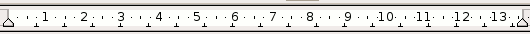

OpenOffice.org 教程之 Writer 文字处理
作者：TeliuTe 来源：基础教程网
四、段落和缩进 返回目录 下一课文章是由许多的段落组成的，一般按一下回车键后另起一段，哪怕只有一行也算是一段，下面我们来看一个练习；
1、段落
1）启动 Writer，自动打开一个空白文档；
2）点菜单“文件－打开”命令，找到自己的文件夹，打开上次保存的“对齐和格式刷”；
3）把鼠标移到正文那一段文字中，在第一个逗号那儿单击一下，让光标插入点在段落当中，
然后点菜单“格式－段落”命令，弹出一个“段落”面板；
4）在出来的面板上，点第一个“缩进和间隔”标签，在上面找到“自动”打勾选中，段落的第一行自动会缩进，
将“行距”设为“2 倍行距”，点“确定”；
这时候，段落就排列得很整齐了；
2、标尺
1）在页面的上边有一个标尺，上面显示了页面的缩进情况，利用它可以快速定位缩进量；

2）在作者“朱自清”那儿点一下鼠标左键，把光标插入点移到第三段；
3）在工具栏上对齐按钮里找到“左右对齐”点一下，文字自动到了左边；
4）拖动标尺左边上面那个三角往右边移动，注意瞄准后再拖，大约拖动10的位置，我们发现文字也随着右移；
这样作者不至于太靠右边，
点菜单“文件－另存为”，把文件名改为“段落标尺”，点“保存”，这样就另存了一份文件；
本节学习了段落和缩进基本操作，如果你成功地完成了练习，请继续学习下一课内容；
本教程由86团学校TeliuTe制作|著作权所有
基础教程网：http://teliute.org
美丽的校园……
转载和引用本站内容，请保留作者和本站链接。